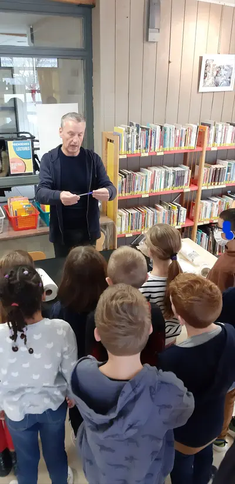
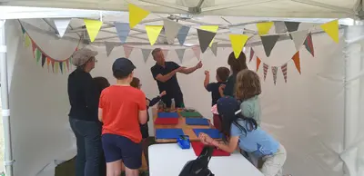
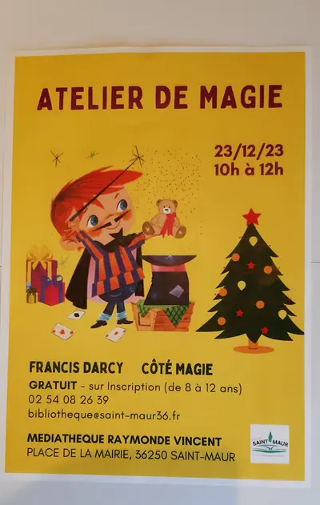
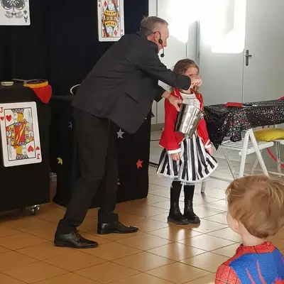
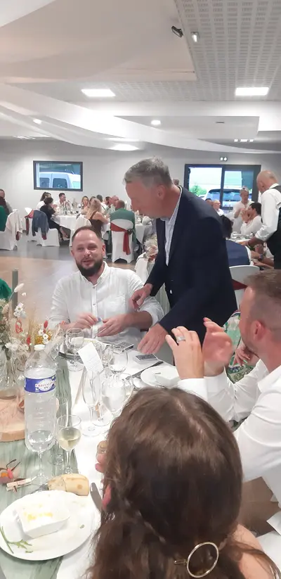
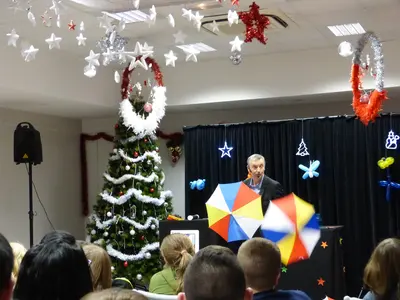

Vierzon, au carrefour du Berry
En brefIssoudun → Vierzon : 40 minDéplacement inclus dans le CherDevis gratuit sous 24 hPlus de 25 ans d'expérience
Vierzon est à 40 minutes d'Issoudun, et Mehun-sur-Yèvre à 45 minutes. Francis Darcy y intervient très régulièrement et y a déjà animé de nombreux événements. Le déplacement est inclus dans le devis.
À Vierzon, il a notamment animé un atelier de magie pour les élèves du lycée Henri Brisson. Pendant un atelier, chacun apprend 3 à 5 tours avec le matériel fourni, et repart avec ses premiers secrets de magicien.
« Un atelier magie fort apprécié par mes élèves au lycée Henri Brisson de Vierzon. Partage et bonne humeur au rendez-vous. Merci encore ! »
— Avis Google
Ce que Francis propose à Vierzon
- Ateliers de magie pour les écoles, collèges, lycées, médiathèques et centres de loisirs
- Spectacle de magie pour enfants : environ 1 h, de 3 à 12 ans, sonorisation incluse
- Arbre de Noël pour les comités d'entreprise, écoles et associations
- Close-up pour les mariages, vins d'honneur et soirées d'entreprise
- Sculpture sur ballons et magie pour les aînés
Questions fréquentes
Le déplacement à Vierzon est-il facturé ?
Non. Vierzon est à 40 minutes d'Issoudun : le déplacement est inclus dans le devis, comme partout dans le Cher et l'Indre.
Francis intervient-il aussi à Bourges ?
Oui, à 50 minutes d'Issoudun, ainsi que dans tout le Cher. Voir la page magicien à Bourges et la zone d'intervention complète.
Comment réserver ?
Appelez Francis au 06 72 11 82 29 ou écrivez-lui depuis le formulaire de contact avec la date, le lieu et le type d'événement. Il vous répond personnellement avec un devis gratuit sous 24 heures.
En images
Cliquez sur une photo pour l'agrandir.






Un événement à Vierzon ?
Parlez-en à Francis : il vous répond personnellement et établit un devis gratuit sous 24 heures.
Vierzon · Mehun-sur-Yèvre · Cher